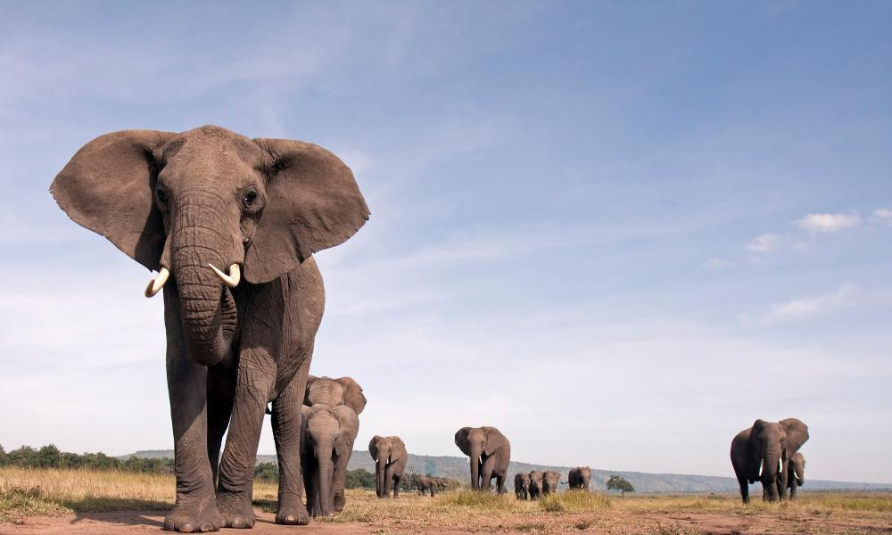

Who We Are
Over the past 60 years, WWF has grown from a small group of wildlife enthusiasts to one of the world's largest and most respected independent conservation organisations. Today, we're working to protect the planet in more than 100 countries on five continents with the support of five million people. As we've developed, our focus has evolved from localised efforts to protect individual habitats and single species, such as the giant panda, to an ambitious strategy to restore biodiversity and achieve sustainable development around the globe.
Our mission is to stop the degradation of our planet's natural environment and to build a future in which people live in harmony with nature.